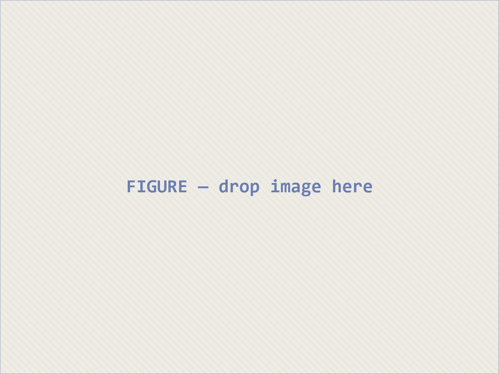
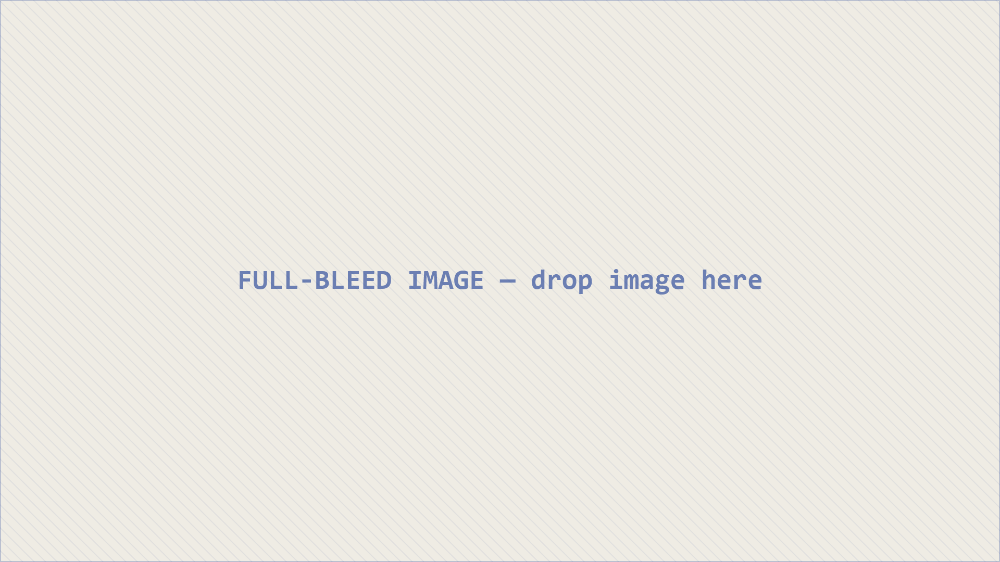
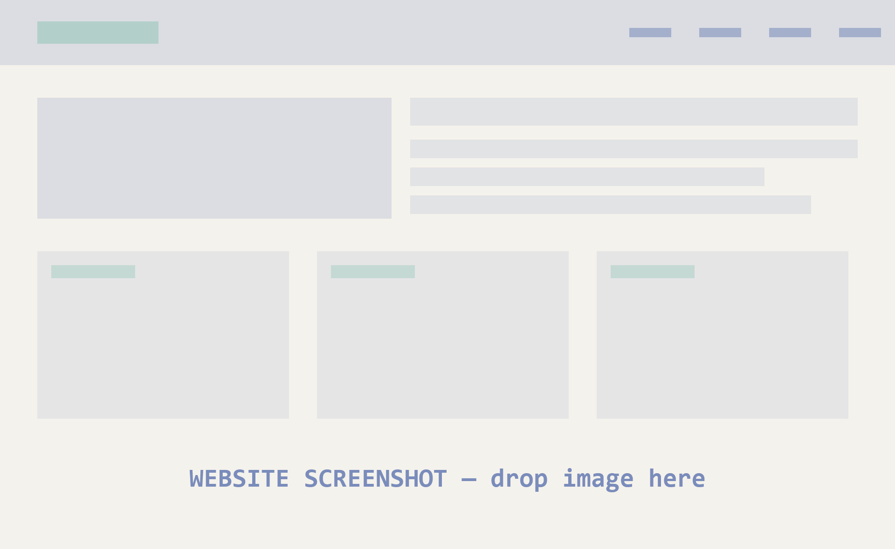

Event · Place, DD Month YYYY
Talk title
A one-line description of the talk.
In four movements
What this talk covers
- The questionWhy keyword search fails the archive.
- The collectionWhat the corpus holds, and what it omits.
- A methodReading at scale without losing the text.
- What it opensNew questions the corpus makes askable.
01
The first section
An optional italic subtitle.
Optional eyebrow
A slide title
A larger opening line that sets up the slide.
- First point
- Second point, with an emphasis and a highlight
- Third point
A comparison
- A point on the left
- Another point
- The corresponding point
- One more
A point, with an aside
The main argument runs in the wider column.
- Supporting detail
- Supporting detail
- Supporting detail
In brief
A ruled sidebar groups a secondary thought without a heavy card.
tag key
A figure beside its reading

The text beside a documentary image. Because figures show whole, a map or manuscript keeps its edges.
- What to notice
- Why it matters
The collection
In figures
The headline figure
12,480
documents catalogued across eight countries — and the count climbs every month.
A table
| Source | Type | Items |
|---|---|---|
| Newspaper A | Periodical | 3,204 |
| Archive B | Pamphlet | 1,876 |
| Collection C | Photograph | 942 |
Source: a line crediting the data.
A query
from iwac import Collection
col = Collection.load("islam-west-africa")
hits = col.search("réforme", lang="fr", after=1990)
print(f"{len(hits)} documents")Built incrementally
One point at a time
- First it appears on its own
- Then the second joins it
- This one rises as it fades in
- And this one lands in green
A claim, in motion
A claim, in motion
The heading slid up and shrank — no cut. Now the evidence arrives.
- The same element, two slides, one data-id
- Reveal interpolates the difference
02
The second section
Green leads; navy is the deep pole — two fields, one system.
A claim worth pausing on, with one emphasised phrase.
A supporting line beneath it.
The archive is not a neutral mirror; it is an argument about what was worth keeping.
— An attributable source

On location
A full-bleed image
A short caption in the protected left third.
On the web
A framed website

Make the data the design
A corpus has a shape — so draw it
Indicative distribution · Source: a line crediting the data.
One coherent image treatment
Two image types, one system
App screenshots keep their true colour — but always inside the same chrome.
Plumbing, then intelligence
The server gives any AI assistant structured, read-only access to the collection; the skill — a plain-text file — encodes how to use it well.
Diagrams over lists
A process, drawn — not bulleted
laïcité au Burkina Faso
Plain language — and any language works.
An embedding model maps the text to 768 numbers — one point in a space of meaning.
laïcité → [0.07, −0.12, …]Cosine similarity ranks every record by how close it sits — in meaning, not wording.
Thank you · Merci